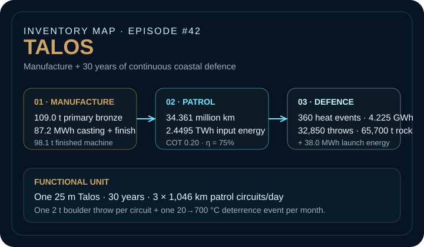
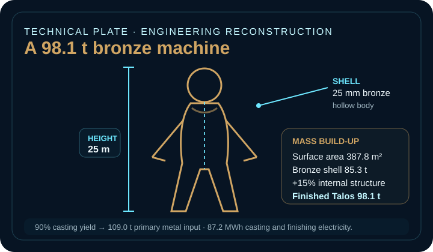
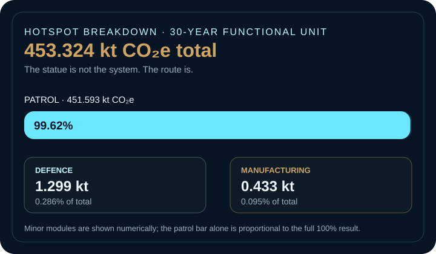

EPISODE #42 · MYTHS & LEGENDS
Talos
What happens when a bronze statue has to patrol an island three times every day?
THE SUBJECT
A statue only until it starts moving.
The ancient sources define the behaviours: Talos is a bronze guardian of Crete, circles the island three times a day, prevents landings by throwing rocks and can kill through a heated embrace. The model keeps those behaviours, then turns them into an engineering system that can be inventoried.
The texts do not provide a height, shell thickness, power source, route geometry, speed, efficiency or service life. The 25 m hollow shell, 1,046 km modern-coastline benchmark, locomotion cost of transport and defence-event frequencies are therefore explicit reconstruction assumptions, not claims about an ancient machine. Apollonius Rhodius and Pseudo-Apollodorus provide the primary narrative requirements; the single sealed ankle vein is represented, while ichor is excluded.
Scale
25 m assumed height, 25 mm bronze shell and 98.1 t finished mass after a 15% internal-structure allowance.
Duty cycle
3 × 1,046 km every day for 30 years: 32,850 circuits and 34.361 million km of lifetime patrol.
Main hotspot
Patrol requires 2.4495 TWh of input-energy equivalent and contributes 451.593 kt CO₂e — 99.62% of the modeled total.
Proxy rule
DEFRA 2026 factors are transcribed exactly, but their representativeness for Bronze-Age Crete is explicitly weak.
VISUAL MODEL
From bronze guardian to mobility system
Two compact engineering views of the reconstructed inventory: how the life-cycle modules connect, and what the assumed 25 m machine physically contains.


LIFE CYCLE INVENTORY
The route turns myth into inventory
The approved episode separates manufacture, patrol and defence. Rounded row contributions below preserve that structure; the headline total remains the approved 453.324 kt CO₂e.
| Stage | Component / activity | Activity data | Climate change | Modelling basis |
|---|---|---|---|---|
| Manufacture | Primary bronze input | 109.0 t | ≈ 0.417 kt CO₂e | 98.1 t finished Talos at 90% casting yield; DEFRA 2026 metals, primary material use, used as a bronze proxy. |
| Manufacture | Casting and finishing electricity | 87.2 MWh | ≈ 0.016 kt CO₂e | 800 kWh per tonne of primary metal input; combined electricity-consumption proxy 0.18436 kg CO₂e/kWh. |
| Patrol | Legged locomotion | 34.361 million km · 2.4495 TWh input energy | 451.593 kt CO₂e | COT 0.20, mass 98,102 kg, g = 9.81 m/s² and 75% drivetrain efficiency; three circuits/day for 30 years. |
| Defence | Thermal deterrence | 360 events · 4.225 GWh | 778.9 t CO₂e | One monthly event heating the 98.1 t body from 20 to 700 °C; 11.74 MWh per event. |
| Defence | Boulder material | 32,850 throws · 65,700 t aggregate | 512.7 t CO₂e | One 2 t boulder per patrol circuit; DEFRA 2026 aggregates, primary material use. |
| Defence | Boulder launch energy | 38.0 MWh | 7.0 t CO₂e | 2 t projectile at 50 m/s, translated to electricity equivalent with the same combined proxy. |
Included
Primary metal, casting electricity, patrol-energy equivalent, monthly heating, boulder material and projectile launch energy.
Excluded
Ichor and control systems, specific transport and infrastructure, maintenance and replacement, recovery and end of life.
Factor logic
Electricity generation 0.13096 + T&D and WTT components 0.05340 = 0.18436 kg CO₂e/kWh combined consumption proxy. The proxy is transparent, not historically representative.
HOTSPOT
The statue is not the system. The route is.
Manufacturing 98.1 tonnes of bronze is material-intensive, but it is numerically eclipsed by moving that mass around Crete more than thirty-two thousand times.

Main result
453.324 kt CO₂e
Manufacture and 30 years of operation.
Patrol
451.593 kt CO₂e
99.62% of the modeled total.
Defence
1.299 kt CO₂e
0.286% from heating, boulders and launch energy.
Manufacturing
0.433 kt CO₂e
0.095% under the selected modern proxies.
Mobility-efficiency sensitivity
COT 0.10 → 227.5 kt CO₂e
Main COT 0.20 → 453.3 kt CO₂e
COT 0.40 → 904.9 kt CO₂e
Because patrol dominates, the total is almost proportional to the locomotion cost of transport.
Height sensitivity
15 m → 35.3 t → 163.5 kt CO₂e
25 m → 98.1 t → 453.3 kt CO₂e
35 m → 192.3 t → 888.0 kt CO₂e
With fixed proportions and shell thickness, area, mass and patrol energy scale with height squared.
Design priority
Reduce route distance, patrol frequency, moving mass or locomotion COT before optimizing the bronze recipe. In this scenario, mobility architecture controls the result.
Boundary warning
The 1,046 km coastline is a modern official benchmark, not ancient cartographic truth. At three circuits per day it implies a continuous average of 130.8 km/h.
THE VERDICT
The bronze makes the guardian.
The route makes the footprint.
Engineer the patrol first.
Talos is a mobility system disguised as a statue.